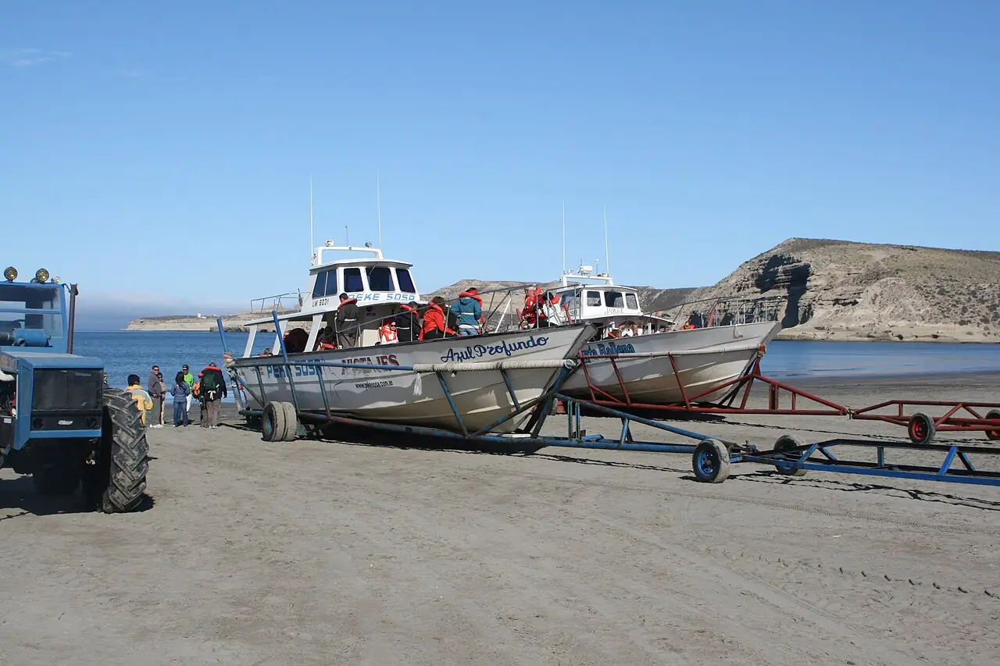

Puerto Pirámides
Chubut, Argentine · plongée, snorkeling, kayak

Seul village de la péninsule Valdés, inscrite au patrimoine mondial, au bord du golfe Nuevo. C’est le point de départ des sorties d’observation des baleines franches australes et des plongées avec les lions de mer.
- Lieu
- Chubut, Argentine
- Niveau
- Intermédiaire
- Activités
- plongée, snorkeling, kayak
- Type d'eau
- Mer / océan
- Coordonnées
- -42.57, -64.28 (position approximative du secteur)
Dangers à connaître
- Eau froide toute l’année : combinaison épaisse indispensable.
- Vent de Patagonie violent et changeant.
Le conseil d'Ocean Buddy
La saison des baleines va environ de juin à décembre : réserve ta sortie auprès d’un opérateur autorisé.
Ouvrir dans Ocean Buddy Télécharger sur l'App Store
Source : Fiche Ocean Buddy · septembre 2026 · à vérifier localement.